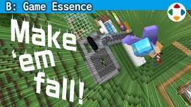
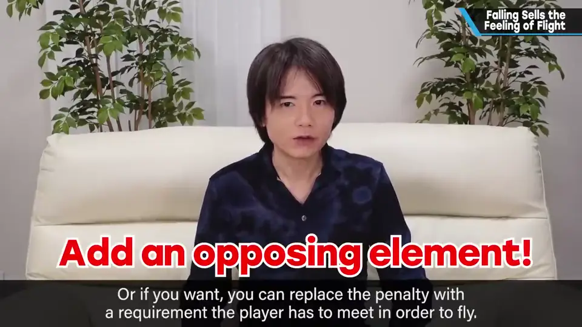
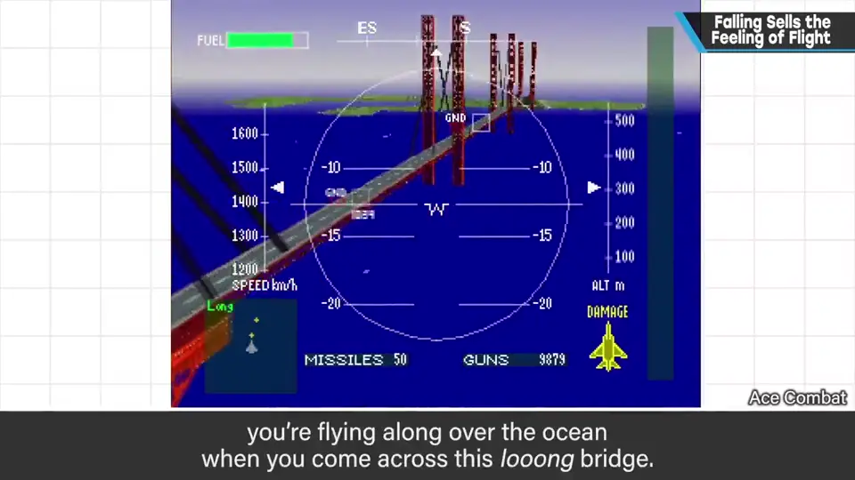
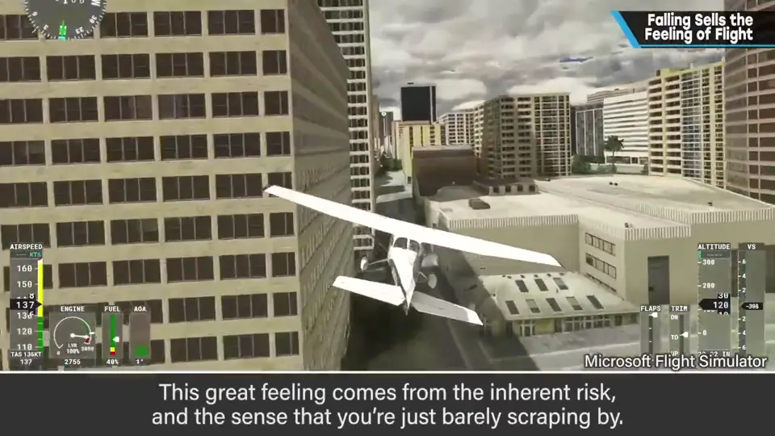
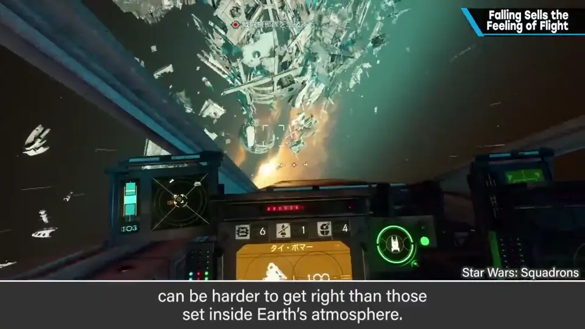
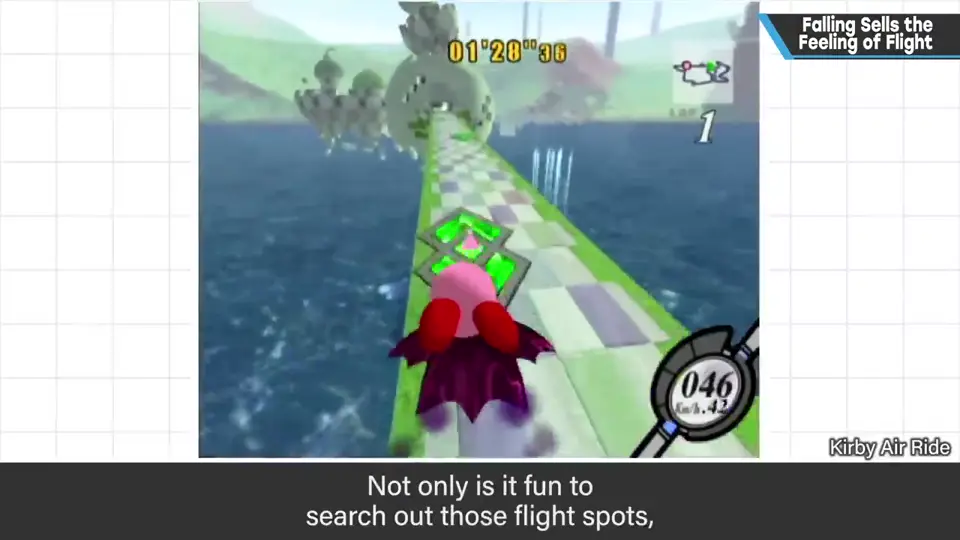
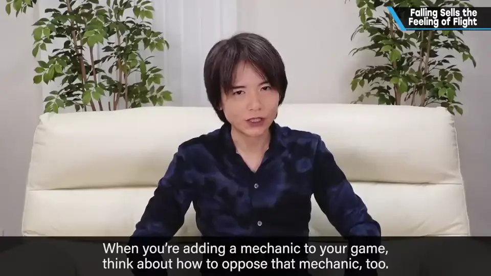

速览
想在企划中表现自由飞翔的快感，首先要加入坠落的机制或惩罚（也可以换成「起飞需要某种准备」）。飞行游戏当然要让空中操作舒服，但只有织入与之相反的要素才会有真实感：飞就要会掉，高速前进就要有变慢的条件。初代《皇牌空战》里海上架着长桥，人总想从下面钻过去——钻过去很爽，是因为那里有风险（撞桥、撞水面都出局），并有通过的实感。只有天空、撞不到地面的游戏就没有这种紧张感；所以宇宙舞台的飞行游戏比大气层内更难做好，空战也是以地面和起伏为舞台比在高空打敌人更容易成型。要让飞的动作舒服，就要把与地面和地形的交互做对；《卡比的空中滑翔》中踏过地形断差机器就会飞起，找起跳点、能飞与不能飞的机器混在一起，加深了飞翔的快感。决定加入某个规格时，也要加入与它相反的要素——就像自己的攻击和敌人的攻击是一套：风险与回报互为表里。
1. 先加入坠落 0:02
如果你的游戏企划想表现在空中自由飞翔的快感，那就先加入坠落的机制或惩罚；惩罚也可以换成「飞起来需要某种准备」。
飞行游戏当然要让空中操作舒服，但只有织入与之相反的东西，才第一次有了实感：
- 飞行的游戏 → 让它会掉下来；
- 高速前进的游戏 → 也加入会变慢的条件。

2. 钻桥：为什么觉得爽 0:42
初代《皇牌空战》中飞行时，海上架着一座长桥——不知为何就想从下面钻过去，钻过去确实很爽。



如果设想只有天空、永远不会撞上地面的游戏，就不会产生这种紧张感。由此可见：
- 以宇宙空间为舞台的飞行游戏，比大气层内的更难做好；
- 同是空战，比起在高空单纯射击敌人，以地面和起伏为舞台更容易做好。
3. 把与地形的交互做对 1:41
要让用超能力等方式飞行的动作变得舒服，樱井认为必须把相对于地面和地形的动作做对。
《卡比的空中滑翔》（Kirby Air Ride）中，踏过地形的断差机器就会飞起来。寻找起跳点的玩法，以及能飞和不能飞的机器混在一起，都加深了飞起来时的快感。

4. 风险与回报互为表里 2:10

会坠落 · 会撞到地形"] B --> C["有风险"] C --> D["穿越成功的实感 = 快感"]
自测题
1. 想表现「自由飞翔」的快感，樱井建议首先加入什么？
坠落的机制或惩罚（也可换成起飞需要某种准备）；即加入与飞翔相反的要素。 0:02
2. 在《皇牌空战》里钻桥为什么让人觉得爽？
因为有风险（撞桥、撞水面都出局），成功穿越时有过关的实感。 0:49
3. 为什么宇宙空间的飞行游戏更难做好？
没有能撞上的地面与地形，就不会产生那种紧张感；空战以地面和起伏为舞台更容易做好。 1:15